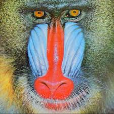

Mandrill

The mandrill is a large Old World monkey native to west-central Africa. It is one of the most colorful mammals in the world, with red and blue skin on its face and posterior.
The Largest and Most Colorful of All Monkeys
Not only is it the world's largest species of monkey, with males occasionally weighing as much as 110 lbs (50 kg) and standing up to 3 ft (90 cm) tall; the mandrill is a sight to see! The female is not so massive and scary, she looks small in comparison to the male and is not so brightly colored.
Where it can be found
The mandrill can be found in the forests of Southern Cameroon, Gabon, Guinea and The Congo in huge groups known as “hordes”. Hordes are stable groupings that average around 620 individuals, but can often be even larger. In fact, a horde of over 1300 that was observed at Lope National Park Gabon is the largest grouping of non-human primates ever recorded! These hordes are known to never sleep in the same trees two nights in a row and spend their days migrating and eating. They survive off of fruit, leaves, stems, bark, fibers, mushrooms, soil, ants, beetles, termites, crickets, spiders, snails, scorpions, eggs, birds, tortoises, frogs, porcupines, rats, shrews and occasionally small antelope.